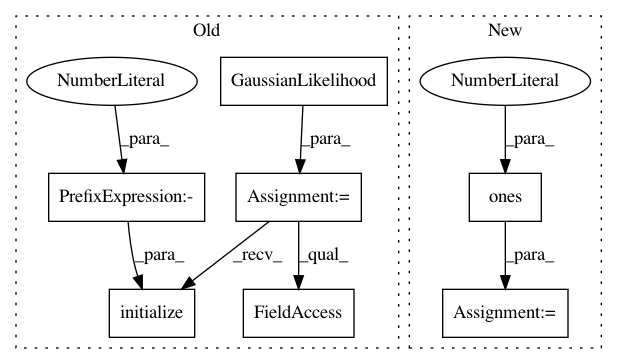

0b056a895e7729f6ade61a30e9fcb853dc4e371e,test/examples/test_white_noise_regression.py,TestWhiteNoiseGPRegression,test_posterior_latent_gp_and_likelihood_without_optimization,#TestWhiteNoiseGPRegression#Any#,56
Before Change
train_x, test_x, train_y, test_y = self._get_data(cuda=cuda)
with gpytorch.settings.debug(False):
// We"re manually going to set the hyperparameters to be ridiculous
likelihood = GaussianLikelihood(
noise_prior=SmoothedBoxPrior(exp(-10), exp(10), sigma=0.25),
noise_constraint=Positive(),
)
gp_model = ExactGPModel(train_x, train_y, likelihood)
// Update lengthscale prior to accommodate extreme parameters
gp_model.rbf_covar_module.register_prior(
"lengthscale_prior", SmoothedBoxPrior(exp(-10), exp(10), sigma=0.5), "raw_lengthscale"
)
gp_model.rbf_covar_module.initialize(lengthscale=exp(-10))
gp_model.mean_module.initialize(constant=0)
likelihood.initialize(noise=exp(-10))
if cuda:
gp_model.cuda()
likelihood.cuda()
After Change
train_x, test_x, train_y, test_y = self._get_data(cuda=cuda)
with gpytorch.settings.debug(False):
// We"re manually going to set the hyperparameters to be ridiculous
likelihood = FixedNoiseGaussianLikelihood(torch.ones(11) * 1e-8)
gp_model = ExactGPModel(train_x, train_y, likelihood)
// Update lengthscale prior to accommodate extreme parameters
gp_model.rbf_covar_module.initialize(lengthscale=exp(-6))
gp_model.mean_module.initialize(constant=0)
In pattern: SUPERPATTERN
Frequency: 3
Non-data size: 7
Instances
Project Name: cornellius-gp/gpytorch
Commit Name: 0b056a895e7729f6ade61a30e9fcb853dc4e371e
Time: 2019-04-05
Author: jrg365@cornell.edu
File Name: test/examples/test_white_noise_regression.py
Class Name: TestWhiteNoiseGPRegression
Method Name: test_posterior_latent_gp_and_likelihood_without_optimization
Project Name: cornellius-gp/gpytorch
Commit Name: 4275d25af066b667a0787f9639b652789f9a0338
Time: 2018-09-28
Author: gpleiss@gmail.com
File Name: test/examples/test_batch_gp_regression.py
Class Name: TestBatchGPRegression
Method Name: test_train_on_batch_test_on_batch
Project Name: cornellius-gp/gpytorch
Commit Name: 4275d25af066b667a0787f9639b652789f9a0338
Time: 2018-09-28
Author: gpleiss@gmail.com
File Name: test/examples/test_batch_gp_regression.py
Class Name: TestBatchGPRegression
Method Name: test_train_on_single_set_test_on_batch